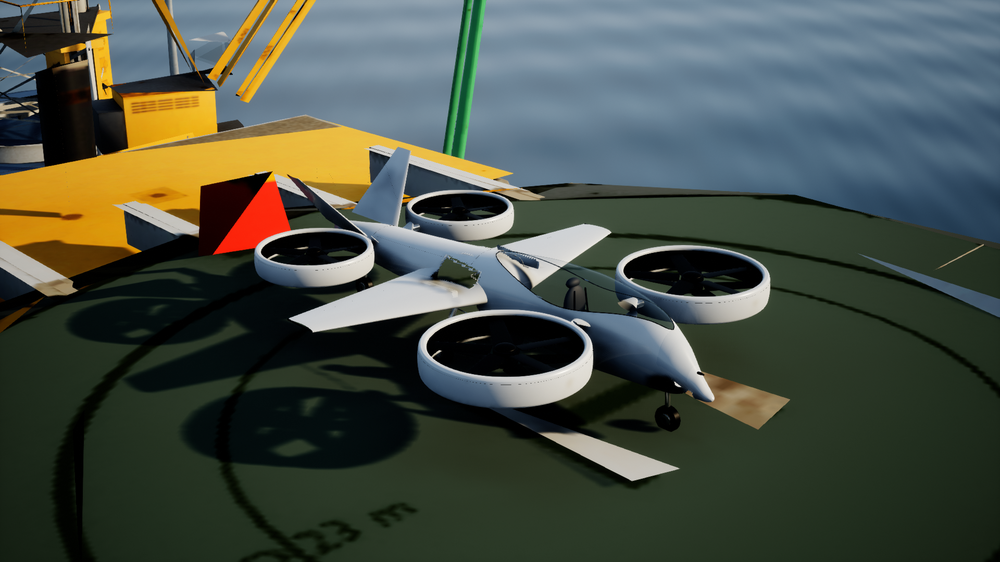
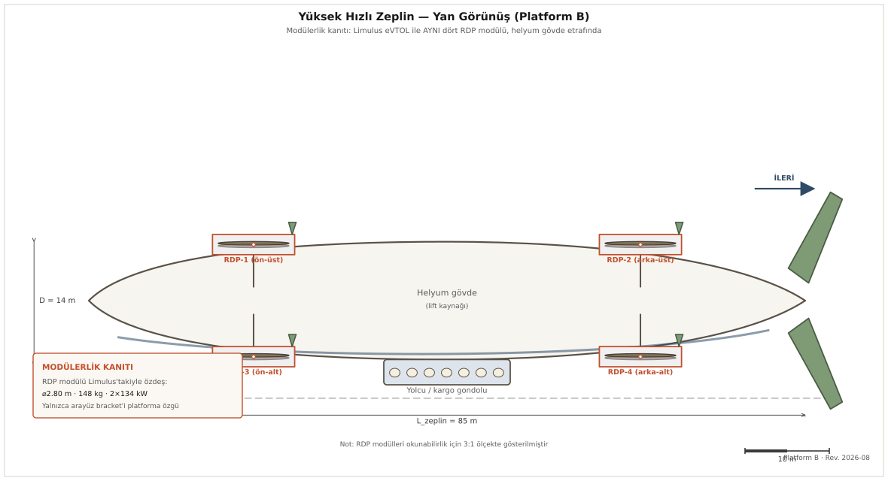
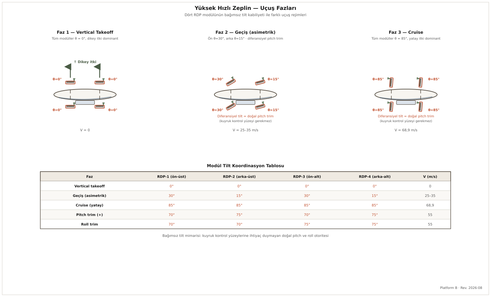

Güncel tasarım adımı, V74
Mimarinin son tasarım adımı V74'tür. Dört kanallı modülün her birinde iki eş eksenli rotor bulunur ve bu düzen projenin vazgeçilmeyecek tasarım kriteridir. Tezin güncel araştırması, merkezi ve federe pekiştirmeli öğrenmeyi dört V74 ve altı heliporttan oluşan bir şehir görevinde karşılaştırmaktadır.

| Büyüklük | V74 değeri |
|---|---|
| Kabin | tek koltuk, modelde 90 kg pilot |
| Rotor düzeni | dört kanallı modül, modül başına iki eş eksenli rotor düzlemi, toplam sekiz düzlem, düzlem başına 5 pal |
| Rotor çapı, ön ve arka | 2,45 m ve 1,97 m |
| Toplam disk alanı, disk yükü | 15,52 m², 2512 N/m² |
| Gövde boyu, en büyük genişlik, yükseklik | 9,8 m, 1,28 m, 2,77 m |
| Kanat açıklığı, alanı, en-boy oranı | 7,36 m, 11,11 m², 4,87 |
| Kuyruk ve kontrol yüzeyleri | 50° V kuyruk, iki ruddervator, dört flaperon paneli |
| İniş takımı | dört tekerlek, gövde içine katlanır |
| Araç kütlesi | 3976,04 kg, 1105 parçalı listenin toplamı, hedef değer değildir |
| Batarya | SA88 hücresi, 196S52P, 1484,88 kg |
| Hover gücü, mil ve bara | 1884,2 kW ve 2035,8 kW |
| Referans görev | sabit ve rüzgârsız platform çevresinde 1267,6 m kapalı tur, 6 m irtifa, 30 s hover rezervi, 187,88 s |
| Nominal görev sonunda batarya | SoC 0,68, hücre ısınması 24,91 K, 101,16 kWh |
| Kanıt düzeyi | benzetim ortamında ölçülmüş, donanım ve uçuş kanıtı yok |
Arşivlenen çalışma, bir simülatör ve dört varyant
Senkron eğim, ikili eğim ve lift-cruise ayrı simülatörler değildir. Aynı altı serbestlik dereceli modelin, eylem uzayına kısıt konarak elde edilen hâlleridir. Bu, karşılaştırmayı bir yarışma olmaktan çıkarıp bir sınamaya çevirir, çünkü kısıtlının olurlu kümesi kısıtsızın içindedir ve kısıtlı bir varyant kısıtsızından iyi çıktığında bunun bir çözücü kusuru olduğu gösterilebilir.
LIMULUS
Dört bağımsız eğim ekseni. Kısıtsız hâl, diğer üçünü kapsar.
Senkron
Dört modül eğimlenir fakat tek kanaldan, hepsi aynı açıda.
İkili
Ön çift ve arka çift ayrı eğimlenir. Yanal simetrik kalır.
Lift-cruise
Eğim yok. Ayrı bir cruise itki birimi taşır, bayrak arkasında.
Modülerlik kanıtı, Platform B
Rotor tahrik modülünün bir platforma değil, bir arayüze bağlı olduğu iddiası ancak ikinci bir platform gösterilerek sınanabilir. Aşağıdaki yüksek hızlı zeplin bu iş için çizildi. Taşıdığı dört modül arşivlenen tasarım adımındaki LIMULUS modülüyle özdeştir, ø2,80 m, 148 kg, modül başına 2 × 134 kW ve platforma özgü olan tek parça arayüz bracket'idir. V74'ün kanallı ve eş eksenli modülü bu gösterimde kullanılmamıştır.


Arşivlenen tasarımın tasarım noktası
Bu bölümden sonraki tasarım noktası, geometri ve başarım değerleri arşivlenen çalışmanın tasarım adımına aittir, Rev. 2026-08. V74'ün değerleri sayfanın başındaki tablodadır.
Geometri
Başarım ve tahrik
Model katmanları
| Dosya | Ne yapar |
|---|---|
| arac.py | Altı serbestlik dereceli gövde dinamiği, katmanları birleştirir |
| rotor.py | Pal elemanı biçiminden itki ve tork, indükleme oranı, solidite |
| aerodinamik.py | Kanat ve gövde kuvvetleri, hücum açısı, sürükleme payları |
| aktuator.py | Eğim aktüatörü hız ve açı sınırları, gecikme |
| sensor.py | Gürültü ve gecikme modeli, bayrak arkasında |
| trim.py | Denge çözücüsü, asimetrik hâller dahil |
| ortam.py | Gymnasium ortamı, altı basamaklı müfredat, ödül tanımı |
| egitim_v2.py | Bu çalışma için yazılan PPO gerçeklemesi, hazır kütüphaneden alınmadı |
| temel_kontrolcu.py | Klasik kaskad referans kontrolcü, öğrenmenin karşılaştırma tabanı |